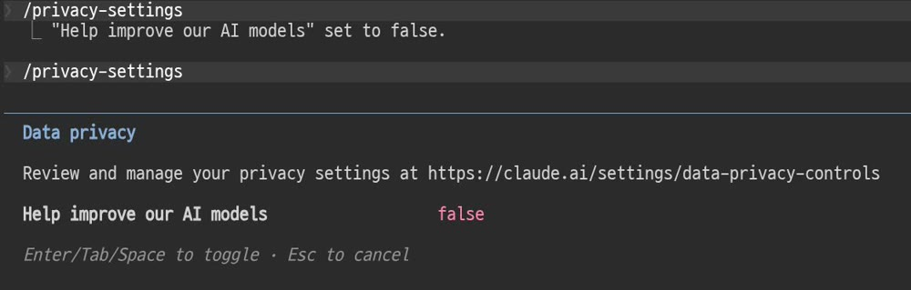

Anthropic 공식 영상과 공식 문서(공지·프라이버시 센터)를 그대로 옮겼습니다. 제가 재서 붙인 숫자는 없습니다.
Anthropic 공식 영상 What does AI actually know about you?(2026년 8월 13일, 조회 259만)는 "네 가지 쓰임"으로 설명합니다. 첫째(대화 자체)는 창을 닫으면 사라지는 것이라, 남을 수 있는 곳은 아래 셋입니다.
| 어디 | 무엇이 남나 | 내가 할 수 있는 것 |
|---|---|---|
| 메모리 | 계정에 저장된 세부 정보. 다음 대화에서 모델이 꺼내 씁니다 | 보고 · 고치고 · 지우고 · 끄기(제품 설정) |
| 회사 서버 | 학습을 허용하지 않으면 기본 30일 보관. 대화를 지우면 목록에서 즉시 사라지고 서버에서는 30일 안에 삭제 | 대화 삭제 · 시크릿(Incognito) 대화 |
| 다음 모델 학습 | 허용하면 비식별 형태로 최대 5년 학습 파이프라인에 보관(허용한 뒤의 새 대화·이어 쓴 대화만) | 설정에서 끄기. 끄면 이후 대화는 학습에 안 쓰임 |
출처: Updates to Consumer Terms and Privacy Policy(2025년 8월 28일) · How long do you store my data? · Is my data used for model training?. 2026년 8월 29일 확인. 정책은 바뀔 수 있습니다.
공지 첫 문단 그대로: Claude Free · Pro · Max 플랜, 그리고 그 계정으로 쓰는 Claude Code까지. 회사 계약(Claude for Work · API 등)은 해당 없음.
이미 시작된 학습에 들어간 데이터는 되돌릴 수 없지만, 끄면 그 뒤의 대화는 쓰이지 않습니다. 개별 대화를 지우면 그 대화도 앞으로의 학습에서 빠집니다. 시크릿 대화는 설정과 무관하게 학습에 쓰이지 않습니다.
클로드 코드에서 /privacy-settings 를 치면 나오는 패널입니다. "Help improve our AI models" 가 false, 즉 꺼져 있습니다. 경로·계정 정보는 잘라냈습니다.

같은 설정이 앱에서는 설정 → 개인정보(Privacy) → "Help improve Claude" 토글입니다. 패널에 적힌 주소 claude.ai/settings/data-privacy-controls 로 바로 갈 수도 있습니다.
/privacy-settings."30일"은 학습을 허용하지 않았을 때의 기본 보관 기간이고, "5년"은 허용했을 때 학습 파이프라인 보관 상한입니다. 둘 다 공식 문서 표기이며 제가 잰 값이 아닙니다.
[ ] 설정 → Privacy → Help improve Claude 토글 확인 (앱) / /privacy-settings (클로드 코드) [ ] 메모리 설정 열어서 저장된 내용 한 번 훑기, 필요 없는 건 지우기 [ ] 실명·회사명·고객명은 A사 / 김○○ 같은 자리표시자로 [ ] 계좌·주민번호·비밀번호는 넣지 않기 [ ] 민감한 대화는 시크릿(Incognito) 대화로 [ ] 지우고 싶은 대화는 목록에서 삭제 (서버에서는 30일 안에 삭제)